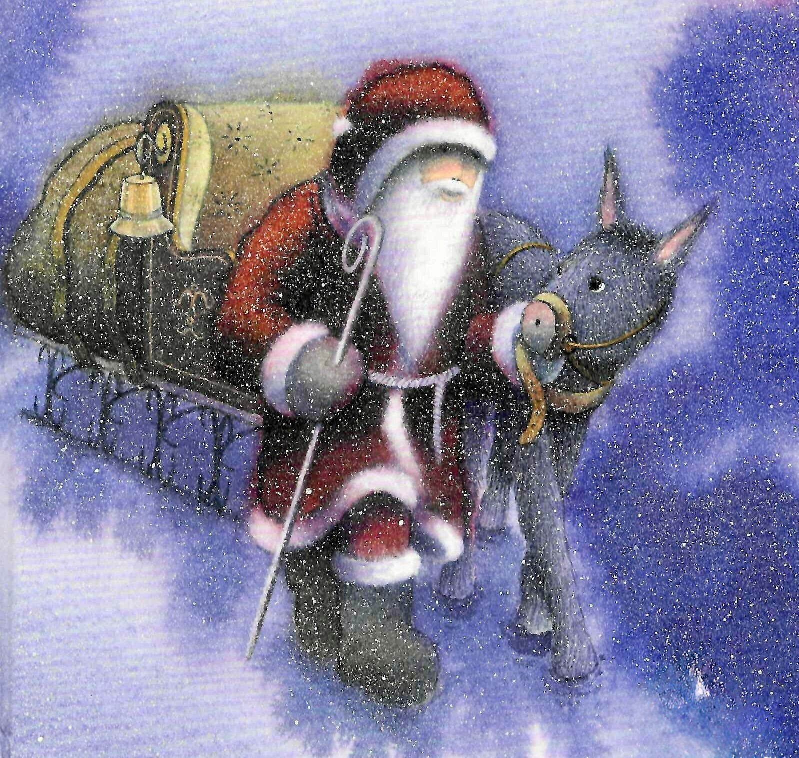

Der Weg
Hier kannst du Informationen zum Weg, zur Dauer, zur Strecke und zu den Stationen einfügen.
Ein stimmungsvoller Spaziergang durch die Weihnachtsgeschichte

Der Weihnachtsweg in Etzgen lädt Gross und Klein zu einem besonderen Adventsspaziergang ein. Entlang des Weges entdecken Besucherinnen und Besucher verschiedene Stationen der Weihnachtsgeschichte in stimmungsvoller Atmosphäre.
Hier kannst du Informationen zum Weg, zur Dauer, zur Strecke und zu den Stationen einfügen.